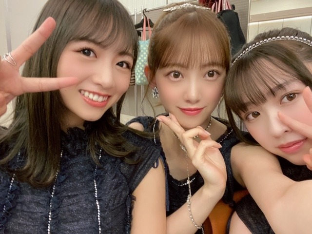
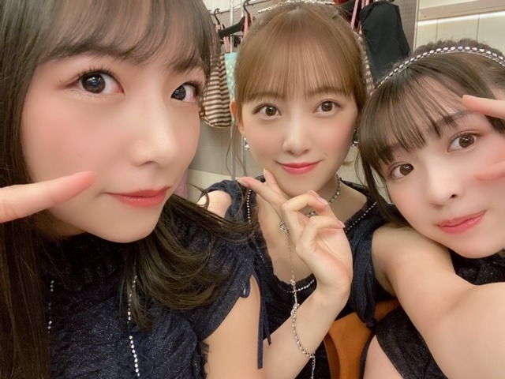

2019/1211Wed寒いのでデニムを履く頻度が高くなりました
こんにちは！
今日は23:45〜文化放送 レコメン
そのあとは
オールナイトニッポン2期生大集合で
生放送尽くしです。
おもちみたい、痩せよう
みなさん今日は夜更かしして
ぜんぶ聴いてねー！目かっぴらいて！
オールナイトニッポンはshowroomだと映像が見れますよん。
最近ね、というか10月くらいから
節約生活を始めていてお買い物もたまーにしかしないし
とにかく貯金をしてます。笑
堅実に生きる。笑
23歳になって、それが凄く大切だなぁと。
2020年の目標はとにかくいろんなことを楽しんで
いろんなお仕事をしたいなぁ〜！
ライブ、お芝居、、海外にも行きたいし
あ、あと写真集もたくさんの方に見ていただきたいです
来春が待ち遠しいo(^-^)o


12月、バタバタしてますが
1日1日を大切に乗り切ります！
最近気づいたことコーナー
・「VOL2」を「ぼるつー」と読んでいたのですが「ボリュームツー」と本当は読むこと(日奈子が教えてくれた)
・「清々しい」を「きよきよしい」と言っていたのですが「すがすがしい」と本当は言うこと(真夏さんが教えてくれた)
・乾燥肌なこと
では。
2019/12/11 12:48
コメント(297)
堀さん、こんにちは
おもちみたい？
十分痩せてると思うし、綺麗だと思う
略字や漢字、読むの難しいね
雰囲気←本当は『ふんいき』なのに、若い世代の人達が『ふいんき』と読んでしまうと言うので、携帯の変換もどっちでも雰囲気と変換されることになってますね
携帯の変換機能は便利だけど、漢字の読み書きが苦手になってくるから、文字を書くのは大切だと、未央奈ちゃんのブログ読んで改めて思い返しました
また紙の小説にも触れてみようかな
昨夜は起きてられなかったので、またradikoでオールナイトニッポン聴くね
じゃぁ、またね
おもちみたい？
十分痩せてると思うし、綺麗だと思う
略字や漢字、読むの難しいね
雰囲気←本当は『ふんいき』なのに、若い世代の人達が『ふいんき』と読んでしまうと言うので、携帯の変換もどっちでも雰囲気と変換されることになってますね
携帯の変換機能は便利だけど、漢字の読み書きが苦手になってくるから、文字を書くのは大切だと、未央奈ちゃんのブログ読んで改めて思い返しました
また紙の小説にも触れてみようかな
昨夜は起きてられなかったので、またradikoでオールナイトニッポン聴くね
じゃぁ、またね
本当に欲しいものを吟味して
楽しんで節約できると幸せですよね♪
写真集は楽しみにしてます。
師走の時期、お体に気をつけて。
楽しんで節約できると幸せですよね♪
写真集は楽しみにしてます。
師走の時期、お体に気をつけて。
レコメン、オールナイトニッポン聴きました見ましたー
良かったです！
ミルクティー色いいですね！
良かったです！
ミルクティー色いいですね！
未央奈レコメンANNすごく良かったよ！またやりたいね。レコメンは来週も楽しみだよ。
やったぁー やってもうたぁーー(´Д｀)
爆睡をーーー
オールナイトニッポン 聞きのがしてもうたぁ
読み方分からんのに知ったかぶりで恥をかくことがあるから、、気つけなはれや
むかし友達数人で定食のお店に入って、友達は壁に貼ってあるメニューを見ながらこう注文しました
豚のなまみ焼きくださーい、、と
壁に貼ってあったメニューの文字は
豚の生姜焼き定食
生姜焼きを、声を高らかになまみやきーーーー
一生忘れられないあの日の逗子の夏、、、、
未央奈ちゃんマジで好きやわぁ〜
乃木坂ファンになって３年目。ついに、ミオナ推しになりました！
名前入りスティックライト、買ってしまった。イコール推し、だよな。
これから、さらに応援するね！
名前入りスティックライト、買ってしまった。イコール推し、だよな。
これから、さらに応援するね！
みおなーーーー
VOL2はボリュームツーって読むんだ、ひとつ賢くなった
VOL3、ボイルさんって読んでた…
今気づいた、未央奈ありがとう!
今気づいた、未央奈ありがとう!
おつかれーみおちゃーん
最近どんどん綺麗になっていく。
女子力いつもたっぷり
いいね！！
貯金？も、いいけど、
今使えるときに使うのも良いと思うよ。
この分自分に返ってくると思うよー。
いつも、応援してまーす。
最近どんどん綺麗になっていく。
女子力いつもたっぷり
いいね！！
貯金？も、いいけど、
今使えるときに使うのも良いと思うよ。
この分自分に返ってくると思うよー。
いつも、応援してまーす。
おもち未央奈最高やで(*^O^*)
昨日見てて楽しかった＼(^-^)／
昨日見てて楽しかった＼(^-^)／
気温の寒暖差も激しいから、風邪引かないように気をつけようね。
あとでYouTubeでレコメン、聴くよ。
あとでYouTubeでレコメン、聴くよ。
みおな、こんばんは。
昨日のANN、聞き逃した。
アプリで聞けるかな。
昨日のANN、聞き逃した。
アプリで聞けるかな。
未央奈ちゃん今晩は!
今日は寒かったですけれども、体調は大丈夫でしょうか？
此れからは寒い日が増えて参りますが、風邪など体調を崩さない様気を付けてお過ごし下さい!
明後日は握手会ですね!
俺が行くのは14日だけですけれども、楽しい1日にしたいですね!
其れではお休みなさい!
未央奈ちゃん！Produce101 JAPANみましたか？
どの写真のみおなちゃんも可愛い
全然お餅じゃないよー！
私も今ダイエットしてるからオススメのダイエット法あったら教えて欲しいです！
寒いので体調気をつけてくださいね✨
全然お餅じゃないよー！
私も今ダイエットしてるからオススメのダイエット法あったら教えて欲しいです！
寒いので体調気をつけてくださいね✨
ホッとする２期生だよね～＾＾
初めまして〜
【乃木坂工事中】を観てます&録画もしてますよ
同県なので、応援してます
色々、頑張って下さいね
【乃木坂工事中】を観てます&録画もしてますよ
同県なので、応援してます
色々、頑張って下さいね
こんばんわん
１日お疲れ様！！
「ぼるつー」や「きよきよしい」って間違えて
読んじゃうなんて、堀ちゃんらしいよね
そういう所も可愛いけど
また最近気づいたことコーナーも定期的にやってほしいな
ではまた(*´∇｀*)
１日お疲れ様！！
「ぼるつー」や「きよきよしい」って間違えて
読んじゃうなんて、堀ちゃんらしいよね
そういう所も可愛いけど
また最近気づいたことコーナーも定期的にやってほしいな
ではまた(*´∇｀*)
お！また乃木坂×週刊プレイボーイ発売されるんだ
買わないとだ！
前回の週刊プレイボーイ見たよ
あの時はなぁちゃんが卒業特集だったんだよね
買わないとだ！
前回の週刊プレイボーイ見たよ
あの時はなぁちゃんが卒業特集だったんだよね
みおな
今日もお疲れ様です
お餅みたいなのは、これはこれで可愛いので自分は好きです（人によるけど女の子はむしろ少しお餅みたいなのが丁度いいと思います）
月日が経つ事に顔が真っ白になってきてて、可愛いです
12月は自分も仕事でバタバタしてて怒涛の日々を過ごしています
疲れたけど、みおながブログを更新したから、それがささやかな幸せです
今年は約23年間生きてきた中で、あっという間に終わったように感じてます
来年も仕事を頑張って、みおなも応援するからね！
2nd写真集の発売日とタイトルも気になるけど、楽しみにしてます
直近だと、来週発売される乃木撮ぼるつーを楽しみにしてます（ぼるつーって読む気持ち自分も中3までそうだったから痛い程分かる笑）
最近は寒さが厳しいので体調に気をつけてね（自分はくしゃみが止まらない笑）
ありがとうございました
今日もお疲れ様です
お餅みたいなのは、これはこれで可愛いので自分は好きです（人によるけど女の子はむしろ少しお餅みたいなのが丁度いいと思います）
月日が経つ事に顔が真っ白になってきてて、可愛いです
12月は自分も仕事でバタバタしてて怒涛の日々を過ごしています
疲れたけど、みおながブログを更新したから、それがささやかな幸せです
今年は約23年間生きてきた中で、あっという間に終わったように感じてます
来年も仕事を頑張って、みおなも応援するからね！
2nd写真集の発売日とタイトルも気になるけど、楽しみにしてます
直近だと、来週発売される乃木撮ぼるつーを楽しみにしてます（ぼるつーって読む気持ち自分も中3までそうだったから痛い程分かる笑）
最近は寒さが厳しいので体調に気をつけてね（自分はくしゃみが止まらない笑）
ありがとうございました
みおなちゃん更新ありがとう╰(*´︶`*)╯♡
今日の朝が早くて寝てました（；＿；）
放送お疲れ様でした(*´꒳`*)
写真もありがと〜
みおなちゃん細いけどねー
美白ですし（╹◡╹）♡
節約大事ですね(*´-`)
自分も来年の目標の1つとして節約しようと思ってます笑
2020年の目標たくさん達成出来ると良きですね(๑>◡<๑)
写真集楽しみです
最近気づいたことコーナーもありがとうヽ(*´∀｀)
読み方難しいよね(´･_･`)
今日の朝が早くて寝てました（；＿；）
放送お疲れ様でした(*´꒳`*)
写真もありがと〜
みおなちゃん細いけどねー
美白ですし（╹◡╹）♡
節約大事ですね(*´-`)
自分も来年の目標の1つとして節約しようと思ってます笑
2020年の目標たくさん達成出来ると良きですね(๑>◡<๑)
写真集楽しみです
最近気づいたことコーナーもありがとうヽ(*´∀｀)
読み方難しいよね(´･_･`)
未央奈ちゃん、ひろっしーです！コメント投稿623回目です！
前回はブログ「自分の服から家の柔軟剤の香りがして安心する瞬間」に「レコメン！」とブログの感想を書きました！
時間→「No.369 2019年12月 6日 00:53」
ブログ更新ありがとうございます！
1個前のブログ、黒髪の報告嬉しかったです！
どうですか？って、可愛いに決まっとるやん！
しかもスヌーピー！可愛すぎるって～！
個人的には黒髪でショートカット見たいな～！
こんなにアップばかりの5連発嬉しすぎます！
全部良いけど、特に3枚目が良いですね～！
今回のブログ、お餅みたい？
2、3枚目を見たら全然、むしろどこが～？
シュッとしてて、可愛いお顔されてましたよ！
多分、たまたま1枚目は写真映りのせいかな？
今「レコメン！」聴いてます！
その後の「オールナイトニッポン」も途中まで聴きますね！明日が準夜勤だったら全部聴けるんだけどね！ごめんなさい！寝落ちするね(謝)
ちなみに僕は黒髪派です！理由は、推しメンにした時の髪型が黒髪ショートだったからです！
へぇ～、最近貯金されているんですね！偉い！
「とにかく」って書くところが良いですね(笑)
お金は本当に大事ですからね！
だから僕も結構お金貯めてます(笑)
「きよきよしい」は読んじゃう可能性あるけど
「ぼるつー」には笑っちゃいました(謝)
でも、言われてみれば読めなくもないですね！
何故か「レコメン！」の後半から記憶が・・・
多分、途中に寝落ちしちゃったみたいです(謝)
「オールナイトニッポン」もまた聴きます！
ここまで読んで頂きありがとうございました！
毎日お仕事お疲れ様です！体調にはくれぐれも気を付けて頑張ってくださいね！
おやすみおな～！
前回はブログ「自分の服から家の柔軟剤の香りがして安心する瞬間」に「レコメン！」とブログの感想を書きました！
時間→「No.369 2019年12月 6日 00:53」
ブログ更新ありがとうございます！
1個前のブログ、黒髪の報告嬉しかったです！
どうですか？って、可愛いに決まっとるやん！
しかもスヌーピー！可愛すぎるって～！
個人的には黒髪でショートカット見たいな～！
こんなにアップばかりの5連発嬉しすぎます！
全部良いけど、特に3枚目が良いですね～！
今回のブログ、お餅みたい？
2、3枚目を見たら全然、むしろどこが～？
シュッとしてて、可愛いお顔されてましたよ！
多分、たまたま1枚目は写真映りのせいかな？
今「レコメン！」聴いてます！
その後の「オールナイトニッポン」も途中まで聴きますね！明日が準夜勤だったら全部聴けるんだけどね！ごめんなさい！寝落ちするね(謝)
ちなみに僕は黒髪派です！理由は、推しメンにした時の髪型が黒髪ショートだったからです！
へぇ～、最近貯金されているんですね！偉い！
「とにかく」って書くところが良いですね(笑)
お金は本当に大事ですからね！
だから僕も結構お金貯めてます(笑)
「きよきよしい」は読んじゃう可能性あるけど
「ぼるつー」には笑っちゃいました(謝)
でも、言われてみれば読めなくもないですね！
何故か「レコメン！」の後半から記憶が・・・
多分、途中に寝落ちしちゃったみたいです(謝)
「オールナイトニッポン」もまた聴きます！
ここまで読んで頂きありがとうございました！
毎日お仕事お疲れ様です！体調にはくれぐれも気を付けて頑張ってくださいね！
おやすみおな～！
堀さん、こんばんは。ブログ更新してくれて嬉しいです。
買い物よりも体験にお金をかけたいのは、堀さんの興味の方向が変わって来てるってことでしょうか。自分自身の変化も楽しんでいってくださいね。
レコメンとANN聞きました。僕は堀さんの髪の色は黒か暗めの茶色が、色白が映えるので好きです。
黒髪は若く見える説と年上に見える説が両方あるのを合わせると、明髪は20～30代に見えるということなのでしょうか。
それでANNの堀さんが凄く楽しそうで良かったです。レコメンで鍛えたフリートーク力を発揮してたように感じて、動く歩道を回転寿司にたとえた所が面白かったし好きな衣装に賛同したし負けず嫌いで自薦してたのも好きでした。定期的に2期生回やって欲しいです。
では、乾燥肌に負けずに保湿も頑張ってくださいね。余談ですが僕が最近気づいた勘違いは、堀さんがたまに言う餅のたとえを、四角い餅が焼き過ぎで膨れたΩのことなのだと思ってました。西日本の餅は丸餅で東日本のは四角い餅と聞いては居たのですが勘違いしてました。あ、もちろん堀さんは餅になんか似てないので、美白の美肌の維持のためにタンパク質取って、ついでに餅も食べてくださいね。
買い物よりも体験にお金をかけたいのは、堀さんの興味の方向が変わって来てるってことでしょうか。自分自身の変化も楽しんでいってくださいね。
レコメンとANN聞きました。僕は堀さんの髪の色は黒か暗めの茶色が、色白が映えるので好きです。
黒髪は若く見える説と年上に見える説が両方あるのを合わせると、明髪は20～30代に見えるということなのでしょうか。
それでANNの堀さんが凄く楽しそうで良かったです。レコメンで鍛えたフリートーク力を発揮してたように感じて、動く歩道を回転寿司にたとえた所が面白かったし好きな衣装に賛同したし負けず嫌いで自薦してたのも好きでした。定期的に2期生回やって欲しいです。
では、乾燥肌に負けずに保湿も頑張ってくださいね。余談ですが僕が最近気づいた勘違いは、堀さんがたまに言う餅のたとえを、四角い餅が焼き過ぎで膨れたΩのことなのだと思ってました。西日本の餅は丸餅で東日本のは四角い餅と聞いては居たのですが勘違いしてました。あ、もちろん堀さんは餅になんか似てないので、美白の美肌の維持のためにタンパク質取って、ついでに餅も食べてくださいね。
未央奈ー‼ブログ更新ありがとう笑12月忙しいけど体調に気を付けて頑張ってね(*^-^*)写真集楽しみ☆絶対買うね☆〃写真の未央奈可愛すぎる(*>д<)幕張の全握で初めて未央奈と握手したんだけど可愛すぎて…名古屋も行きたかったな(つд；)オレは仕事だーΣ(ノд<)ずっと可愛い未央奈が大好きです(=ﾟωﾟ)ﾉこれからも頑張ってね‼
堀ちゃん、こんにちは！
雑誌“ar ”を「エーアール」って読んでた事は内緒だよ！
今日スーパーでパンの焼ける匂いがしてて、ふと、あぁ昔はパン工場が住んでる町にあったなぁ〜なんてノスタルジーに浸ってたら、なんか槙原敬之さんの曲にこんなのあったなぁ〜なんて思って検索してみたら、そちらの歌詞はチョコレート工場でした.....なんで自分はパン工場で記憶しちゃてたのか？.......謎ですな！
この歌詞には自転車で河原に連れて行くって続くんだけど、自分、ものぐさなんで、バイクで2ケツ(メット入るかなぁ？←失礼しました)なんてどうですかねぇ〜、、ワイルドだろぅ〜！あっ！自分ってば、名を匿名で、なのってませんでしたね！でも名乗らずに去って行くのも、おくゆかしくて印象に残るかなぁとか思って、、、、じゃ、ここで失礼します。去り際にバイクの音がしますが、お気になさらずに、、では、ぼぼぼぼー、、、、尊敬しています。頑張ってくださいね。
雑誌“ar ”を「エーアール」って読んでた事は内緒だよ！
今日スーパーでパンの焼ける匂いがしてて、ふと、あぁ昔はパン工場が住んでる町にあったなぁ〜なんてノスタルジーに浸ってたら、なんか槙原敬之さんの曲にこんなのあったなぁ〜なんて思って検索してみたら、そちらの歌詞はチョコレート工場でした.....なんで自分はパン工場で記憶しちゃてたのか？.......謎ですな！
この歌詞には自転車で河原に連れて行くって続くんだけど、自分、ものぐさなんで、バイクで2ケツ(メット入るかなぁ？←失礼しました)なんてどうですかねぇ〜、、ワイルドだろぅ〜！あっ！自分ってば、名を匿名で、なのってませんでしたね！でも名乗らずに去って行くのも、おくゆかしくて印象に残るかなぁとか思って、、、、じゃ、ここで失礼します。去り際にバイクの音がしますが、お気になさらずに、、では、ぼぼぼぼー、、、、尊敬しています。頑張ってくださいね。
おもちみおな可愛すぎる！
透き通る様に白くてほっぺたぷにぷに！
僕の中でレコメンって今一番面白いバラエティです
女心を分かってないリスナーと、
それをぶった斬るみおなちゃんに
毎回爆笑してます
透き通る様に白くてほっぺたぷにぷに！
僕の中でレコメンって今一番面白いバラエティです
女心を分かってないリスナーと、
それをぶった斬るみおなちゃんに
毎回爆笑してます
未央奈さん、おはよう
もう12月も中旬ですねぇ～。一年早いなぁ。
昼夜の寒暖差が激しい日が続いてるから、忙しいとは思うけど体調を崩さないように、身体を気遣って下さいね
未央奈、大好きやぁ～
もう12月も中旬ですねぇ～。一年早いなぁ。
昼夜の寒暖差が激しい日が続いてるから、忙しいとは思うけど体調を崩さないように、身体を気遣って下さいね
未央奈、大好きやぁ～
そんな未央奈が好き(笑)
年末年末頑張ろう(*´ー｀*)
年末年末頑張ろう(*´ー｀*)
未央奈さん、大好きです
お身体大事にして、お仕事頑張ってね
大好きやぁ～
お身体大事にして、お仕事頑張ってね
大好きやぁ～
いつもブログ更新ありがとう！
おもちの未央奈ちゃんも可愛です！
むしろ、おもちの方が私は好きです！
私も写真集楽しみにしてますよ！
「最近気づいたことコーナー」いいですね笑
「清々しい」を「きよきよしい」と読んでしまうのが、たまらなく愛しいです。
ちなみに私も乾燥肌です！
最近は寒くなってきましたから、暖かくして
風邪をひかないようにしてくださいね！
いつも応援してます！
おもちの未央奈ちゃんも可愛です！
むしろ、おもちの方が私は好きです！
私も写真集楽しみにしてますよ！
「最近気づいたことコーナー」いいですね笑
「清々しい」を「きよきよしい」と読んでしまうのが、たまらなく愛しいです。
ちなみに私も乾燥肌です！
最近は寒くなってきましたから、暖かくして
風邪をひかないようにしてくださいね！
いつも応援してます！
未央奈さん☆❤️❤️❤️❤️❤️ 今晩は♫ お元気ですか？ 水曜日は、レコメンとANNお疲れ様でした。未央奈さん☆は、水曜日の夜は、眠れなくて大変でしたね。放送が終わった後は、ちゃんとぐっすり寝ましたか？ でも翌日には、また朝からお仕事があったと思います。ほんと人気者は辛いですね。（泣） でもお体にはくれぐれも気をつけてくださいね。 レコメンでは未央奈さん☆の髪の色をどうするかについて話題になっていましたけど、未央奈さん☆が決めることですからね。人の意見に左右されることなく、我が道を歩いていってくださいね。でも未央奈さん☆は、黒い髪の色が似合うと思いますよ。理由は可愛く見えるからです‥ それに清楚に見えますよ。やはり日本の女の子は黒髪だと思います。 でも未央奈さん☆が決めてくださいね。すみません‥
じゃあ、未央奈さん☆❤️❤️❤️おやすみおな♫♫♫ 良いクリスマスを過ごしてくださいネ❤️❤️❤️❤️❤️❤️❤️❤️❤️❤️❤️❤️❤️❤️❤️❤️❤️❤️❤️ （＾_＾）
じゃあ、未央奈さん☆❤️❤️❤️おやすみおな♫♫♫ 良いクリスマスを過ごしてくださいネ❤️❤️❤️❤️❤️❤️❤️❤️❤️❤️❤️❤️❤️❤️❤️❤️❤️❤️❤️ （＾_＾）
こんばんわん
１日お疲れ様！！
坂道テレビ第２段やるね～
前回は堀ちゃんとゆいぽんときょんこの座談会があって
嬉しかったなぁ
最年長だからといって頑張っている姿が可愛かった
堀ちゃんの乃木坂に対する想いを聞けたり、
お料理しているレアな堀ちゃんも観れて大満足の回だった
今回も堀ちゃんの座談会があったりするのかな？
どんな感じで放送されるのか凄く楽しみ
ではまた(*´∇｀*)
１日お疲れ様！！
坂道テレビ第２段やるね～
前回は堀ちゃんとゆいぽんときょんこの座談会があって
嬉しかったなぁ
最年長だからといって頑張っている姿が可愛かった
堀ちゃんの乃木坂に対する想いを聞けたり、
お料理しているレアな堀ちゃんも観れて大満足の回だった
今回も堀ちゃんの座談会があったりするのかな？
どんな感じで放送されるのか凄く楽しみ
ではまた(*´∇｀*)
令和になって、特に、これからの時代、好きなことを楽しんだ人ほど成功するって、斎藤一人さんの本に書いてありました。これからは、堀さんの時代だと思います。堀さんは、もっと、もっと、評価されてもいいし、おかしいと思ってました。でも大丈夫です。すべて上手くいってます。貯金されてるなんて、偉いですね、二期生のオールナイトニッポン聞きました。六年間継続されてる二期生の、みなさんは凄いです。継続は力なり、ですね、あと初めて、堀さんを知ったのはミュージックフェアーで、ドームをドリームと間違えてたみたいな話をされてて、おもしろくてかわいい人だなぁと思ったのが、堀さんのファンになった、きっかけでした。楽しむことに目覚めた、堀さんの人生は驚くほど好転します。それも思いもよらぬ形で幸運が舞い込んできますよ
堀ちゃん、こんにちは。
ブログ、ありがとうっ！
うんうん、確かにお餅のようにお肌が白いね
美味しいものいっぱい食べて、忙しい毎日に備えてね♪
堀ちゃんはすごくスリムだから、ダイエットは不要だよね
「VOL2」は、略語として「ぼるつー」で、ある意味間違ってないかもね
以前、気づいたけど気づかないフリをしたことコーナー
・コンビニでお金を払うとき、「～のカードはお持ちですか？」と聞かれて、「持ってないです」と答えたものの、手元の財布を見たらそのカードが入っていて、少しずつ少しずつ手に持っている財布の角度を変えて、そのカードが店員さんに見えないようにしたこと
・同じくレジでお金を払ったとき、小銭が財布から転げ落ちて台の下に転がり込んだけど、しゃがみこんで必死に「うー、うー」うなりながら手を伸ばして小銭を取るのが嫌なので、落ちたことに気づかないフリをしたこと
またねっ！
ブログ、ありがとうっ！
うんうん、確かにお餅のようにお肌が白いね
美味しいものいっぱい食べて、忙しい毎日に備えてね♪
堀ちゃんはすごくスリムだから、ダイエットは不要だよね
「VOL2」は、略語として「ぼるつー」で、ある意味間違ってないかもね
以前、気づいたけど気づかないフリをしたことコーナー
・コンビニでお金を払うとき、「～のカードはお持ちですか？」と聞かれて、「持ってないです」と答えたものの、手元の財布を見たらそのカードが入っていて、少しずつ少しずつ手に持っている財布の角度を変えて、そのカードが店員さんに見えないようにしたこと
・同じくレジでお金を払ったとき、小銭が財布から転げ落ちて台の下に転がり込んだけど、しゃがみこんで必死に「うー、うー」うなりながら手を伸ばして小銭を取るのが嫌なので、落ちたことに気づかないフリをしたこと
またねっ！
こんばんはー！
今日は握手会ありがと！
目の前で笑顔見られて最高だったー♪
痩せる必要全く無いと思うよ？？
2020年は何といっても写真集の発売！楽しみにしてるね♪
神々しいはなんて読む？？
今日は握手会ありがと！
目の前で笑顔見られて最高だったー♪
痩せる必要全く無いと思うよ？？
2020年は何といっても写真集の発売！楽しみにしてるね♪
神々しいはなんて読む？？
きよきよしいって本田圭佑も間違えてた笑
未央奈さん、今日の全国握手会はお疲れ様でした。
未央奈さんにとり、良い握手会になったようですね。
明日の個別握手会も頑張って下さい。(*^_^*)
CRYSTALより。
未央奈さんにとり、良い握手会になったようですね。
明日の個別握手会も頑張って下さい。(*^_^*)
CRYSTALより。
未央奈ちゃん今日は握手してくれてありがとう！
未央奈ちゃんめちゃくちゃ握手できて嬉しかったよ！
次の全国握手会でも未央奈ちゃんと握手できたらいいなと思います！
僕の名前覚えていてね！
今日一日お疲れ様！
ゆっくり休んでね！
未央奈ちゃんめちゃくちゃ握手できて嬉しかったよ！
次の全国握手会でも未央奈ちゃんと握手できたらいいなと思います！
僕の名前覚えていてね！
今日一日お疲れ様！
ゆっくり休んでね！
こんばんわん
１日お疲れ様！！
『月刊TVガイド』見たよ～
久しぶりのみなみおなショット
まだ茶髪の時だったね～
私も堀ちゃんがシナリオを書いたものを見てみたい
絶対面白い！
堀ちゃんの独特な世界観が好きだからさ
ではまた(*´∇｀*)
１日お疲れ様！！
『月刊TVガイド』見たよ～
久しぶりのみなみおなショット
まだ茶髪の時だったね～
私も堀ちゃんがシナリオを書いたものを見てみたい
絶対面白い！
堀ちゃんの独特な世界観が好きだからさ
ではまた(*´∇｀*)
いつも、乃木坂のメンバーを気付かってくれて、ありがとう。
これからも、アイドルとして、また女優として大成して下さい。2期生のミサンガ、いいですね。堀さんのそういった振舞いに、人としての大きさ、優しさを感じます。
これからも、アイドルとして、また女優として大成して下さい。2期生のミサンガ、いいですね。堀さんのそういった振舞いに、人としての大きさ、優しさを感じます。
へい未央奈(•ө•)
・捻挫で2日ぶりに朝から五キロ走ってきてからのー映画"ジュマンジネクストレベル"を観てきたよ( •̀ㅁ•́;)
今回は爺さんずと女盗賊とウマが新キャラクターとして出てたけど、今回も前作に負けず劣らず面白かった(^^)
特に爺さんが、ロック様の中にプレイヤーキャラとして入った時の、ロック様の演技がまんまあの爺さんの性格や行動で、さすがですロック様！と思ったよ。笑
特にキメ顔良き( ͡° ͜ʖ ͡°)
・ 今後も面白そうな洋画が沢山あるよーフォード対フェラーリ、ハーレイクイン、チャーリーズ・エンジェルリブート(ナオミ・スコットだから楽しみ)、ゴーストバスターズリブート？、バッドボーイズフォーライフ、ティーンスピリット、1917命をかけた伝令が楽しみおなー(•̀ㅁ•́)
がんば未央奈ー(ง'̀-'́)ง
・捻挫で2日ぶりに朝から五キロ走ってきてからのー映画"ジュマンジネクストレベル"を観てきたよ( •̀ㅁ•́;)
今回は爺さんずと女盗賊とウマが新キャラクターとして出てたけど、今回も前作に負けず劣らず面白かった(^^)
特に爺さんが、ロック様の中にプレイヤーキャラとして入った時の、ロック様の演技がまんまあの爺さんの性格や行動で、さすがですロック様！と思ったよ。笑
特にキメ顔良き( ͡° ͜ʖ ͡°)
・ 今後も面白そうな洋画が沢山あるよーフォード対フェラーリ、ハーレイクイン、チャーリーズ・エンジェルリブート(ナオミ・スコットだから楽しみ)、ゴーストバスターズリブート？、バッドボーイズフォーライフ、ティーンスピリット、1917命をかけた伝令が楽しみおなー(•̀ㅁ•́)
がんば未央奈ー(ง'̀-'́)ง
こんにちは！
未央奈は痩せなくても十分細いと思う
おもちといえば、毎日食べると美容に良いみたいだね
貯金は大事だよ～、貯金があると心にも余裕が出てくる
ぼるつー、きよきよしい、と言っていた未央奈、面白いじゃん(笑)
僕の最近気づいたこと、レコ大の観覧募集に申し込んでたけど、その日仕事だった(笑)
もし当たったら早めにあがらしてもらう
もしかしたら、乃木坂46がレコ大三連覇する瞬間に立ち会えるかもしれないからね
それではまた！
未央奈は痩せなくても十分細いと思う
おもちといえば、毎日食べると美容に良いみたいだね
貯金は大事だよ～、貯金があると心にも余裕が出てくる
ぼるつー、きよきよしい、と言っていた未央奈、面白いじゃん(笑)
僕の最近気づいたこと、レコ大の観覧募集に申し込んでたけど、その日仕事だった(笑)
もし当たったら早めにあがらしてもらう
もしかしたら、乃木坂46がレコ大三連覇する瞬間に立ち会えるかもしれないからね
それではまた！
未央奈ちゃん
最高!! いつもありがとう
デニム姿見たいなあ
最高!! いつもありがとう
デニム姿見たいなあ
こんばんは。
デニムはありがたいですね。自分は最近デニムばかりです。
レコメンとオールナイトニッポンで生放送で深夜のやや長丁場ですが、楽しんで欲しいです。
こちらも楽しみですよ。
節約とは偉いです。
貯金はのちのちに効いてきますからね。
堅実さをキープしてくださいね。
2020年は、より活動の場が幅広くなると良いです。
願ってますよ。
写真集も楽しみですし、フォトエッセイも期待したいな。
師走はあっという間に駆け抜けるのでしょうが、日々の積み重ねを楽しんで欲しいです。
気づいたことコーナー、あるあるですね。
先入観でそのままなことというのは、幾つになってもあります。
自分も乾燥肌でこれから憂うつです。
お身体に気をつけて。
頑張って行きましょう！
デニムはありがたいですね。自分は最近デニムばかりです。
レコメンとオールナイトニッポンで生放送で深夜のやや長丁場ですが、楽しんで欲しいです。
こちらも楽しみですよ。
節約とは偉いです。
貯金はのちのちに効いてきますからね。
堅実さをキープしてくださいね。
2020年は、より活動の場が幅広くなると良いです。
願ってますよ。
写真集も楽しみですし、フォトエッセイも期待したいな。
師走はあっという間に駆け抜けるのでしょうが、日々の積み重ねを楽しんで欲しいです。
気づいたことコーナー、あるあるですね。
先入観でそのままなことというのは、幾つになってもあります。
自分も乾燥肌でこれから憂うつです。
お身体に気をつけて。
頑張って行きましょう！


最近仕事で精神的に参ってしまい、他のSNSでコメント出来なくてすみません
レコメン・オールナイトニッポン出演お疲れ様でした。
若い歳から貯金ですか〜偉いですね！、自分が23歳の時は欲しい物バカスカ買ってましたよ
既に来年の目標立ててるとは素晴らしいです！、堀ちゃんならきっと目標達成出来るのではないかと思います
12月は歌番組やらその他特番等でゆっくりしてられない日々が続いて大変だと思いますが、どうか体調には十分気を付けた上仕事を楽しんで貰えたらと思います
毎日何事にしても頑張っている堀ちゃんが大好きです！
自分も堀ちゃんを見習わないと